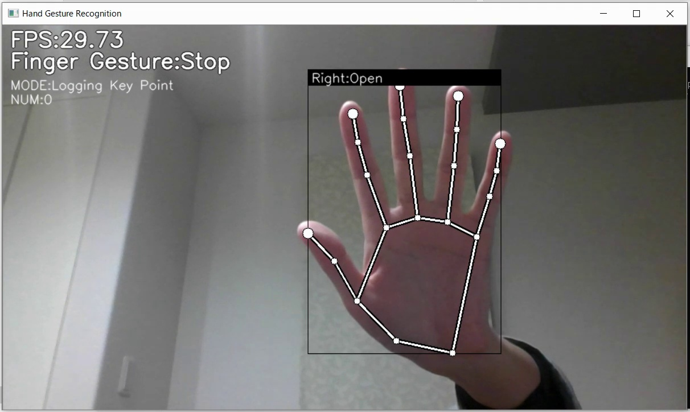

← Back to all projects
Gesture Based Number Recognition & System Control
Real-time hand tracking to control volume and brightness using gesture-based interactions.

Overview
This project uses hand tracking and gesture recognition to control system settings like
volume and brightness without touching the keyboard or mouse. It creates a more natural,
touchless interaction experience on Windows.
Key Features
- Real-time hand tracking using a computer vision pipeline.
- Gestures mapped to system volume control via Pycaw.
- Brightness control using WMI APIs on Windows.
- Continuous feedback loop for smooth, responsive control.
Tech Stack
- Python
- OpenCV for video processing
- Mediapipe (if you used it) for hand tracking
- Pycaw for volume control, WMI for brightness